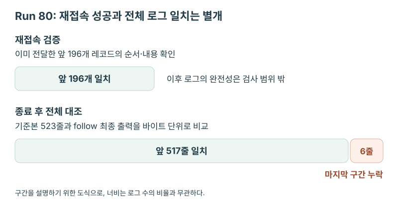

VLOPS · 원격 로그 재접속과 종료 구간 누락
재접속은 성공했는데 마지막 6줄은 왜 빠졌을까
로그 스트림에 재접속한 뒤 다시 받은 앞 196개 레코드는 이전 출력과 일치했지만, 작업 종료 후 전체 로그를 비교하니 마지막 6줄이 빠져 있었다. 재전송 구간을 정확히 건너뛰는 것과 마지막 로그까지 수집하는 것은 별개의 문제였다.
처음부터 다시 보내는 로그 서버
NAVER Cloud에서 모델 서빙·평가 플랫폼인 VLOps의 로그 follow 기능을 구현했다. GPU 작업의 로그를 읽다가 연결이 끊기면 원격 서버가 처음부터 다시 전송했으므로, 클라이언트가 이를 그대로 출력하면 이미 전달한 로그가 중복됐다.
작업이 같은 메시지를 여러 번 출력할 수 있어 로그 문자열만으로 중복을 제거할 수는 없었다. 내용이 같다는 이유로 버리면 정상 로그도 사라지므로, 재접속 후 이전에 받은 구간을 정확히 건너뛸 방법이 필요했다.
클라이언트에는 전달한 레코드 수와 누적 해시를 저장하되, stdout·stderr 등 스트림 종류와 본문을 순서대로 해시에 반영했다. 재접속하면 처음부터 들어오는 레코드로 해시를 다시 계산하고, 이전에 전달한 개수만큼 읽었을 때 두 해시가 같으면 그다음 레코드부터 출력했다.
검증하는 동안 앞부분은 다시 출력하지 않았으며, 해시가 다르면 같은 로그가 같은 순서로 재전송됐다고 확인할 수 없어 오류로 처리했다. 이 경우에는 임의로 중복을 제거한 뒤 계속 읽지 않았다.
Run 79: 재전송 196개를 제외한 최종 523개
Run 79에서는 연결이 끊기기 전에 196개 레코드를 전달했고, 재접속 후에는 앞 196개의 누적 해시가 단절 전 값과 일치하는지 확인한 뒤 새로 도착한 327개만 추가로 전달했다.
재전송된 196개는 다시 출력하지 않았으므로, 최종 출력은 최초 196개 + 신규 327개 = 523개 레코드였다. 이미 받은 구간만 건너뛰기 때문에 뒤에서 같은 문장이 다시 나오더라도 새로운 레코드라면 그대로 전달할 수 있었다.
Run 80: 앞부분은 맞고 마지막 6줄은 없는 출력
별도 실행인 Run 80에서도 앞 196개의 재전송 검증은 통과했지만, 실행 종료 후 기준본과 비교하자 앞 517줄만 일치하고 마지막 6줄은 출력에 없었다.
비교 기준으로는 작업 종료 후 원격 로그 서버에서 다시 수집한 해당 노드의 로그를 사용했다. 검증 스크립트로 이 기준본과 follow의 최종 출력을 바이트 단위로 비교해, 순서가 같고 빠지거나 중복된 내용이 없는지 확인했다.

원인을 추적해 보니, 클라이언트가 상태 조회에서 작업 종료를 확인하자 아직 읽지 않은 출력이 남은 로그 스트림까지 닫고 있었다. GPU 작업이 끝난 시점과 클라이언트가 로그를 모두 받은 시점이 달랐는데, 두 시점을 같다고 보고 종료한 것이 문제였다.
재접속 검증은 앞 196개만 비교했으므로, 비교 대상에 없는 마지막 6줄이 누락돼도 해시는 일치했다. 이 차이는 종료 후 수집한 기준본과 전체 출력을 대조하고 나서야 확인할 수 있었다.
작업 종료 후 로그 drain
작업 종료를 감지해도 바로 연결을 닫지 않고, 로그 클라이언트를 drain 상태로 전환해 남은 출력을 읽도록 수정했다. 또한 drain 중 재접속이 발생해도 이 상태를 유지해, 연결이 복구됐다는 이유로 종료 대기를 처음부터 다시 시작하지 않도록 했다.
새 레코드를 받으면 idle timeout을 갱신해 후속 로그를 더 기다리되, 전체 대기 한도는 처음 작업 종료를 감지한 시점부터 계산했다. 유지 중인 서빙 자원이 계속 로그를 보내더라도 무한정 기다리지는 않도록 한 것이다. 다만 원격 스트림이 먼저 끝나면 즉시 종료했으며, 로그 연결을 닫는 처리는 GPU 작업 취소·회수와 분리했다.
수정 후 Run 82에서는 마지막 오류 줄까지 포함한 523줄 전체가 기준본과 바이트 단위로 일치했다.
| 실행 | 확인한 내용 | 결과 |
|---|---|---|
| Run 79 | 재접속 후 앞 196개 검증과 신규 전달 | 최초 196개 + 신규 327개 = 최종 전달 523개 레코드 |
| Run 80 | 앞 196개 검증 통과 후, 종료 후 기준본과 전체 대조 | 앞 517줄 일치, 마지막 6줄 누락 |
| Run 82 | 종료 후 drain 적용, 기준본과 전체 대조 | 마지막 오류 줄까지 523줄 전체 바이트 일치 |
Run 79·80·82의 수치와 비교 결과는 당시 검증 문서에 근거했으며, 스크립트 원본과 실행별 원시 출력·diff 파일은 확보하지 못해 재실행으로 확인하지는 못했다. 이 결과가 drain의 대기 한도를 넘겨 도착하는 로그까지 보장하는 것은 아니었다.